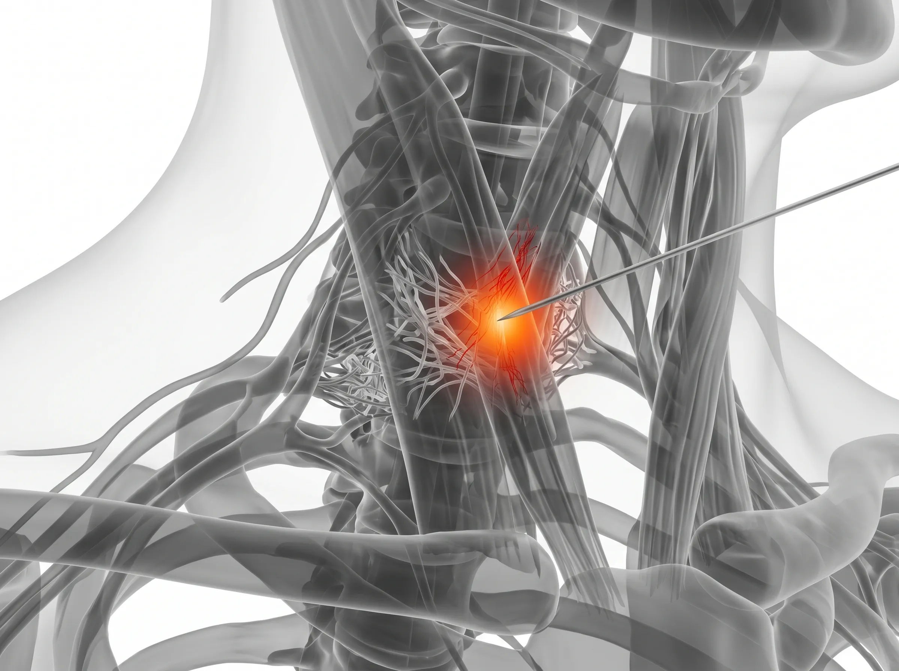
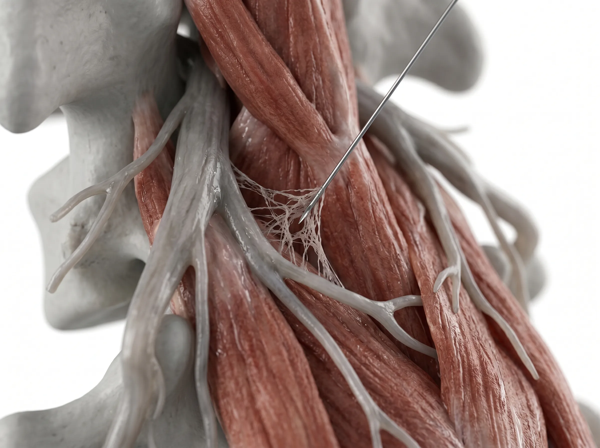

Treatment — Injection Therapy
침습을 넘어선,
정교함의 새로운 기준
삼성365의원의 미세바늘 주사치료는 단순한 통증 억제를 넘어섭니다.
0.3mm의 정밀 접근으로 신경 유착을 해소하고 신체 본연의 회복력을 복원합니다.
Classification
통증의 겉면이 아닌
신경의 틈새를 봅니다
약물에만 의존하는 일반 주사와 달리, 미세바늘 자체가 유착 조직을 물리적으로 직접 박리하여 숨통을 틔워줍니다.
물리적 신경 박리
바늘 자체가 치료 도구가 되어 신경을 옭아맨 유착을 직접 풀어줍니다.
조직 손상 최소화
0.3mm 미세바늘을 사용하여 시술 시 통증이 거의 없고 조직 손상을 극소화합니다.

0.3mm
Ultra Precision
Professional Diagnostic System
치료의 성패는 정확한
'감별'에서 시작됩니다.
Visual Evidence
영상 의학적 입체 분석
단순히 "아픈 곳"에 주사하지 않습니다. 고해상도 초음파와 X-ray를 통해 척추의 미세한 정렬과 신경을 옭아맨 유착 조직의 위치를 0.1mm 단위로 투영하여 분석합니다. 보이지 않는 통증의 실체를 데이터로 확인하는 첫 단계입니다.
Doctor's Experience
숙련된 이학적 정밀 검사
기계가 읽어내지 못하는 미세한 통증은 전문의의 감각으로 찾아냅니다. 숙련된 이학적 검사를 통해 근육 내 유착으로 인해 신경이 눌린 정확한 위치(Trigger Point)를 촉진하여 찾아내고, 환자의 운동 가동 범위를 체크하여 통증의 근원을 감별합니다.
Treatment Design
증상별 맞춤형 3R 테라피
통증의 양상과 원인은 사람마다 다르기에, 3R Therapy는 현재 상태에 맞춰 유연하게 적용됩니다. 증상의 정도와 만성도를 분석하여 이완(Release), 강화(Reinforcement), 정상화(Recovery)의 비중을 정밀하게 조정합니다. 개인별 컨디션에 꼭 맞춘 단계별 치료가 근본적인 회복을 앞당깁니다.

Mechanism
3R Therapy Philosophy

Release 이완
심부 근육과 신경 주위의 유착을 미세바늘로 직접 정밀하게 풀어내어 숨통을 틔워줍니다.

Reinforcement 강화
약해진 인대와 근육 조직에 자생력을 유도하여 신체 구조를 다시 견고하게 재건합니다.

Recovery 정상화
예민해진 신경계를 안정시키고 신체 기능을 본연의 건강한 상태로 되돌립니다.
Journey
치료 과정 가이드
심층 상담
전문의와 직접 증상을 상담합니다.
정밀 검사
초음파 등으로 부위를 확인합니다.
타겟 시술
미세바늘로 정교하게 시술합니다.
일상 복귀
짧은 휴식 후 일상으로 돌아갑니다.
통증의 악순환,
지금 멈출 수 있습니다.
재발이 잦아 근본 해결이 필요하신 분
스테로이드 부작용이 걱정되시는 분